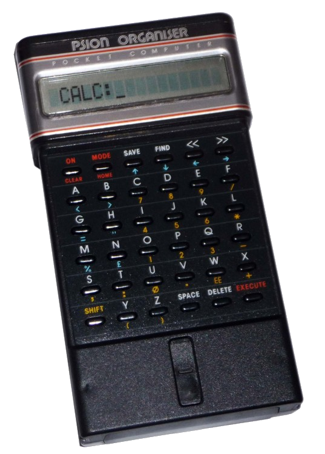
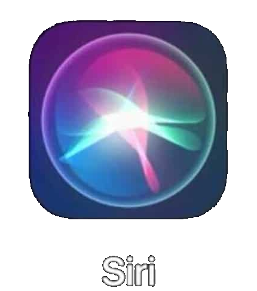

Introduction to Personal Digital Assistants:
Personal Digital Assistants (PDAs for short) used to refer to small, mobile devices that aid a human user in accomplishing tasks that could otherwise be more complicated without their help.
They often provided aid in the form of having the ability to play different forms of media, note-taking and general information storage, as well as making calculations and the ability to tell time.
In more modern times, these devices are made redundant by the more powerful smartphones and other smaller devices like laptops and tablets. However, the term has been upgraded to take on a new meaning,
often being used to refer to “Intelligent Personal (Digital) Assistants” (IPAs) like Apple’s Siri. They are tools that are implemented into smartphones and other smart devices that aid the user in
many ways, only being limited by the abilities of the device they are built-in to.
Go to Table of Contents.
Table of Contents:
-
Introduction
-
Early Examples of PDAs
-
Modern PDAs
-
Apple's Siri
-
Amazon's Alexa
-
Google Assistant
-
Microsoft's Cortana
-
Common Functionality in Modern PDAs
-
Controversies
-
Expected Improvements in PDA Technology
Early Examples of PDAs:
The very first PDA that was created is said to be Psion’s “Organizer” personal pocket-sized computer. It was launched as a commercial product in 1984, and was incredibly simple to use. Its design was a simple keyboard under a small bar screen, similar to that of a calculator. It had the ability to create simple notes that it would store onto small removable devices, which were a type of storage called EPROM Storage, or “Erasable Programmable Read-only Memory”. The Organizer could also keep track of time, through a simple hardware counter that would write information to the device’s RAM, which allow users to keep quite accurate track of time. It also had small programming capabilities, but this was too difficult for the average user to utilize, so its main function was only notetaking. Psion would later go onto launch a new product in the same series called the Organizer II (released in 1986, which would add more features like an alarm-clock, creating databases with ease, and was much more powerful than its predecessor in terms of storage and processing power. The programming language was also made simpler and more efficient, allowing more users to be able to utilize the feature.
Another huge development in the PDA technology was made by Apple, in the form of the Apple “Newton”, which was released commercially in 1993. The marketing campaign of this device is what
first coined the term “personal digital assistant”. Despite its relatively high price for the time, this device was considered to be highly innovative. The device was operated by a stylus, not
a keyboard, which would allow for the device to contain mostly screen and workspace. The note-taking and word-processor on this device were made in such a way that would allow them to accept
typed text, as well as handwritten text and sketches. The device also had the capability to exchange data and information across platforms with tools like Microsoft Office tools, Rich Text
Format, etc. It also had a dedicated programming language and script that was based on C++.
Go to Table of Contents.
PDAs in the Modern Day:
As mentioned earlier, the modern-day PDAs are often used to refer mostly to Intelligent Personal Assistants (IPAs), as the early-day PDA is considered outdated compared to modern smartphones and
laptops, however some dedicated PDAs are still frequently used in healthcare and restaurant, and sometimes even business settings abroad. IPAs provide much more assistance, streamlining the process
of using the devices significantly if they are utilized well. Some of the most common examples of these IPAs one might find include, but are not limited to: Amazon Alexa, Apple’s Siri, Google Assistant
and Microsoft’s Cortana.
The following is a projection of the market share of each major IPA by the end of 2021:
| IPA By Brand | Market Share |
|---|---|
| Google Assistant | 23.3% |
| Samsung Bixby | 14.5% |
| Apple's Siri | 13.1% |
| Amazon Alexa | 3.9% |
| Microsoft's Cortana | 2.3% |
| Other (split amongst many brands) | 42.9% |
Go to Table of Contents.
-
Apple's Siri
Siri was one of the first highly developed IPAs. It was originally released in early 2010 as an app for the Apple’s Operating System software, iOS. It was bought by Apple several months later, and then implemented into all of their next product releases. Methods of using Siri include both text and voice commands. Siri utilizes advanced machine learning techniques to learn and develop its voice recognition accuracy, as well as to provide more accurate results to users. Using Siri, one can carry out any number of tasks on their devices, such as setting reminders, making notes, searching for information on any search engine, playing music, etc. Since its advent, Siri has led to massive developments in the fields of Artificial Intelligence and Machine Learning, as its behavior and accuracy becomes increasingly more refined. Its usage is limited to only Apple’s own products, like the Mac computers/laptops, iPhones, iPads, etc.

Go to Table of Contents.
-
Amazon's Alexa:
Amazon’s product, the Amazon Alexa (also known as the “Amazon Echo”, which is the device that Alexa resides on) is another artificial intelligence-based virtual/digital assistant, which was launched as a commercially available product in 2014. The Echo is a device that contains a speaker and microphone, but no real user-interface. Most of the inputs Alexa receives are by voice. It can carry out tasks similar to Siri, such as utilizing search engines, performing calculations, playing audio. However, some additional features make it slightly more advanced. It has the ability to act as a hub or main control of other smart devices in your home (cameras, lights, appliances, etc. if they are compatible). As well as this, Alexa can order items off of Amazon’s website to your home in a secure way, so long as it is configured properly, and even allow the user to play some voice-based games with Alexa.
Go to Table of Contents.
-
Google Assistant:
Google Assistant is also an AI-based digital assistant, which was developed by Google and released in mid-2016. Google Assistant’s usage being the highest amongst all IPAs can be accredited to the fact that most platforms can utilize it. Smartphones, any major computer system, and most smart home devices can all freely access and use the Google Assistant software. It shares many of the same features as Alexa and Siri, and has the ability to act as a smart home, interfacing with electrical and other smart appliances. Text and speech can both be used to interact with the Google Assistant.
An add-on to Google Assistant in recent times is that a two-way communication software is being actively developed, called Google Duplex. It is capable of holding conversations with human users, and replicate/mimic human conversation patterns and habits. It is a big project focusing on the development of natural language processing, the concept behind the recognition and recreation of human speech by AI.
Go to Table of Contents.
-
Microsoft's Cortana:
Cortana is Microsoft’s artificial intelligence-powered assistant tool, which became stable and functional in late 2019, however it was still usable till as far back as 2014. It can be operated with both voice and text. It can carry out most of the same tasks as the other IPAs, and developers and other third-party applications on Windows 10 can also utilize the Cortana software for their own work. Any search results or redirections done by Cortana keep the user within Microsoft’s own products, like searches will always utilize Microsoft Bing, and any webpages will be in Microsoft Edge.
Go to Table of Contents.
-
Common Functionality:
Most IPAs (even those outside of the ones mentioned above) share many similar features, some of which were pointed out. Amongst the common tasks, these IPAs can utilize search engines and produce results based on user instruction. This can include local weather information, or distance from a certain location, or answers to questions. Furthermore, IPAs can setup reminders and alarms/timers for users, as well as play various forms of media, like music, other audio files, videos, etc. They can also send emails and text messages on behalf of the user. Proper usage of IPAs can enable the users to almost mindlessly carry out tasks just by saying them out loud, especially with those IPAs that have accessibility to other smart appliances around the house.
The method of interfacing with these software and devices is referred to as “Conversational User Interface”, which is simply being able to hold a conversation with the computer to make use of its features and capabilities. These Conversational User Interfaces, or CUIs for short, rely on natural language processing to discern what the text they have determined means and what is expected. These natural language processors can pick up relevant information not just from what was presently said, but context from what was said before. This technology is akin to that of “chatbots”, which are software that try to hold conversations with human conversation partners.
Go to Table of Contents.
Controversies:
Systems such as PDAs and IPAs come with major privacy concerns, especially on the mediums that utilize Conversational User Interfaces. Many of the major companies that have voice-based assistants
have been accused of “recording” data they gather from the devices. Since the devices themselves require microphones to understand what the users are requesting in an unencrypted form, people have
worried for a long time that their lives are no longer private, and that big companies have large stores of data on each of their users. It is also thought that the devices are not just listening
and recording when they are activated, but are doing so all the time, as they can often be voice-activated (so they need to be listening at all times to be able to detect the voice-activation
commands). This same privacy concern is also present in other Personal Digital Assistant devices, as well, as they have the ability to connect to the internet and other networks, meaning that they
can also potentially transfer information back to their respective companies, potentially being accessed by malicious parties as well, since this data is often not encrypted at the user-end.
Additionally, there are also concerns of job insecurity being created from the work required to train the assistant tools. “Training” the artificial intelligence behind the assistant tools
requires large stores of labelled data using neural networks. The labelling process is a manual process, so a person needs to spend the time doing menial but laborious tasks (such as transcribing
human speech to text, identifying accents or specific slang terms, etc.) which require large amounts of time. The issue with this is that the people who are paid to these tasks are often paid trivial
amounts for very large quantities of work, so this produces job insecurity globally.
Go to Table of Contents.
Expected Improvements in the Future:
Some improvements that are currently being worked on for the field of IPAs and PDAs in general are improvements in natural language processing and machine learning/Artificial Intelligence techniques.
These improvements to language processing include factors such as: addition of slang language (language that is highly informal, and are often localized to small regions), processing speed and accuracy
increases. Another major improvement for natural language processing will be the addition of more supported languages, as only a select few languages are currently usable on these platforms. The
inclusion of even more languages will greatly raise the accessibility level of PDAs, allowing more people to reap the benefits of having an intelligent personal assistant in their lives.
Aside from improvements to natural language processing capabilities, additional improvements to PDA technology will come with time as other computing technology is advanced, such as ease of
creating a “smart home” environment. More features will be added that enhance and optimize user experience with PDA technology as time passes. It is also speculated that these same voice assistant
tools will be able to have a more physical presence by residing in a robotic/mechanical body. Allowing these to access and explore the world around them will only lead them to assist us better and in
more noticeable ways. Further innovations and advancements will allow each user to have a more personalized experience with the tools.
In addition, the security and privacy concerns mentioned earlier on will likely be addressed. Preventing this data from being accessible by the companies and other parties while still allowing
the devices to remain fully functional will become a huge leap in the comfort and assistance they can provide.
Go to Table of Contents.